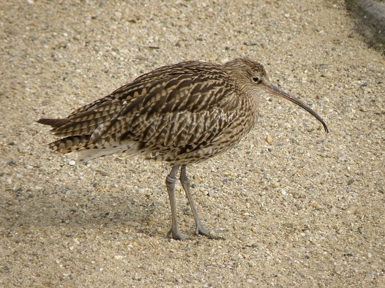
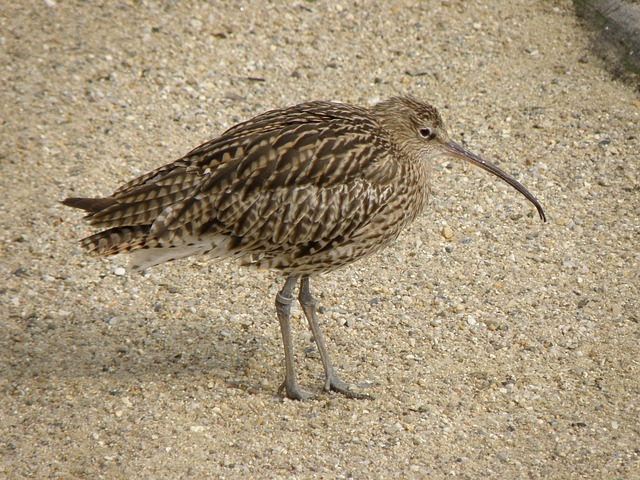

Birds of canservation consern in Ireland
there are a number of birds whose number are declind
barn-owl
the barn-owl is the most common owl

curlew
the curlew is reconisable
curlew have long legs

there are a number of birds whose number are declind
the barn-owl is the most common owl
the curlew is reconisable
curlew have long legs